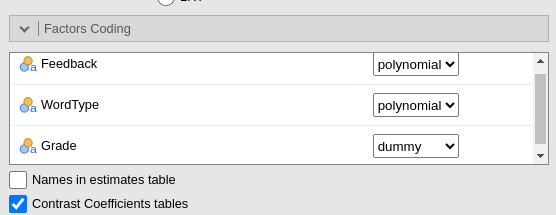

Simple Effects and Simple Interactions
keywords ANOVA, simple effects, simple interaction, contrasts linear model
3.0.0
In this page we work out some analysis involving simple effects and simple interaction, using jamovi GAMLj. We will replicate the analyses found in the very instructive webpage Implementation of Three-factor Between-group Analysis of Variance by Bruce Dudek. In particular, the analyses on simple effects and interactions. We employ data from Keppel and Wickens, pg 466 data set, a 3x3x2 design keppel_3way_pg466.csv file. Dudek’s page employes a variaty of R commands and packages to obtain the results, so we can compare GAMLj with different source of results. The aim of these analyses is to validate the results obtained with GAMLj with the ones obtained with different software.
The research design
The dataset has a dependent variable, number of words recalled from a memorized list. Three independent variables defined as factors 1) Grade, either fifth or twelfth graders 2) Feedback conditions: control (none), praise, or negative. WordType, that is the type of words used: HF_HE, HF_LE, LF_LE
GLM
Input
We first set up a general linear model to replicate the overall ANOVA
presented in Dudek’s
page, par 3.1.2. We launch General Linear Model from
the Linear Models menu and set up the model
And we get (among other tables) the ANOVA results.
In R, we can use:
data<-read.csv("../data/keppel_3way_pg466.csv",stringsAsFactors=T)
data$Feedback <- car::recode(data$Feedback, "'none'='None'; 'pos'='Positive'; 'neg'='Negative'")
data$Feedback<-factor(data$Feedback,levels=c("None","Positive","Negative"))
data$WordType <- factor(data$WordType,
levels=c("LF_LE","HF_LE","HF_HE"))
contrasts(data$Grade)<-c(0,1)
model<-lm(numrecall~Feedback*WordType*Grade,data=data)
car::Anova(model)## Anova Table (Type II tests)
##
## Response: numrecall
## Sum Sq Df F value Pr(>F)
## Feedback 26.867 2 7.1118 0.001519 **
## WordType 64.867 2 17.1706 0.0000007993 ***
## Grade 14.400 1 7.6235 0.007304 **
## Feedback:WordType 14.667 4 1.9412 0.112829
## Feedback:Grade 8.600 2 2.2765 0.109987
## WordType:Grade 16.200 2 4.2882 0.017397 *
## Feedback:WordType:Grade 10.000 4 1.3235 0.269461
## Residuals 136.000 72
## ---
## Signif. codes: 0 '***' 0.001 '**' 0.01 '*' 0.05 '.' 0.1 ' ' 1Contrasts
In Dudek’s analysis, both Feedback and WordType are coded with custom orthogonal contrasts. The first contrast is a quadratic contrast (-1,-1,2) for Feedback (2,-1,-1) for WordType. The second contrast is a linear contrast, (-1,-1,0) for Feedback and (0,-1,1) for WordType. In other words, we are testing:
- Feedback:
- first: None and Positive vs Negative
- second: None vs Negative
- WordType:
- first: LF_LE vs HF_LE and HF_HE
- second: HF_LE vs HF_HE
Both in R and GAMLj we employ polynomial contrasts that, opportunely re-arranged, yield the same results (same F-test, same t-test and p-values). Recall, in fact, that the scale and the sign of the contrasts are immaterial for the test results. In R, we can achieve this by changing the contrasts definition for the variables. For Feedback:
## .L .Q
## None -0.7071068 0.4082483
## Positive 0.0000000 -0.8164966
## Negative 0.7071068 0.4082483However, the order of the contrasts codes, and thus the comparisons, is different (in Dudek’s “Negative” as code 0 for the linear contrast and None has codes of the same sign). We can rearrange the coding as follows:
## .L .Q
## None 0.7071068 0.4082483
## Positive 0.0000000 -0.8164966
## Negative -0.7071068 0.4082483The same goes for WordType:
## .L .Q
## LF_LE -0.7071068 0.4082483
## HF_LE 0.0000000 -0.8164966
## HF_HE 0.7071068 0.4082483In Dudek’s, “LF_LE” is the zero-code level in linear, so we re-arrange:
## .L .Q
## LF_LE 0.0000000 -0.8164966
## HF_LE 0.7071068 0.4082483
## HF_HE -0.7071068 0.4082483Finally, although this would not be recommended in standard analysis, the variable Grade is coded with treatment code. This is not recommended because the contrasts coefficients for all factors are estimated for \(Grade=0\), in the example “Grade 12th”.
## [1] 1 0In GAMLj we simply need to re-arrange the order of the factor levels in the datasheet to be sure that the polynomial contrasts are exactly what we want. In GAMLj, for 3-level factors, the polynomial contrasts are always:
- Linear: first vs last level
- Quadratic: first and last versun second level
Thus, for need to order the levels as follows:
Feedback: Positive Negative None
WordType: HF_HE LF_LE HF_LE
At this point, we can set the correct coding system for the factors

Contrast coefficients
##
## Call:
## lm(formula = numrecall ~ Feedback * WordType * Grade, data = data)
##
## Residuals:
## Min 1Q Median 3Q Max
## -2.2 -1.0 0.1 1.0 2.2
##
## Coefficients:
## Estimate Std. Error t value Pr(>|t|)
## (Intercept) 7.999999999999995559 0.204878765717619815 39.047 <0.0000000000000002 ***
## Feedback.L 0.377123616632824177 0.354860431614917871 1.063 0.2915
## Feedback.Q 0.163299316185545329 0.354860431614918093 0.460 0.6468
## WordType.L 0.659966329107443794 0.354860431614918259 1.860 0.0670 .
## WordType.Q -0.326598632371090047 0.354860431614918204 -0.920 0.3605
## Grade1 -0.799999999999999822 0.289742329120117659 -2.761 0.0073 **
## Feedback.L:WordType.L -0.000000000000001743 0.614636297152859168 0.000 1.0000
## Feedback.Q:WordType.L 0.115470053837925510 0.614636297152859057 0.188 0.8515
## Feedback.L:WordType.Q 0.461880215351699652 0.614636297152859279 0.751 0.4548
## Feedback.Q:WordType.Q -0.200000000000002093 0.614636297152859945 -0.325 0.7458
## Feedback.L:Grade1 0.989949493661164581 0.501848435139387483 1.973 0.0524 .
## Feedback.Q:Grade1 0.408248290463861574 0.501848435139387372 0.813 0.4186
## WordType.L:Grade1 1.272792206135786808 0.501848435139387816 2.536 0.0134 *
## WordType.Q:Grade1 -0.734846922834951566 0.501848435139387705 -1.464 0.1475
## Feedback.L:WordType.L:Grade1 -1.499999999999997335 0.869226987360353531 -1.726 0.0887 .
## Feedback.Q:WordType.L:Grade1 -0.866025403784438486 0.869226987360353309 -0.996 0.3224
## Feedback.L:WordType.Q:Grade1 0.866025403784444592 0.869226987360354086 0.996 0.3224
## Feedback.Q:WordType.Q:Grade1 0.500000000000005440 0.869226987360353531 0.575 0.5669
## ---
## Signif. codes: 0 '***' 0.001 '**' 0.01 '*' 0.05 '.' 0.1 ' ' 1
##
## Residual standard error: 1.374 on 72 degrees of freedom
## Multiple R-squared: 0.5336, Adjusted R-squared: 0.4235
## F-statistic: 4.846 on 17 and 72 DF, p-value: 0.0000009884It can be verified that the results are identical to Dudek’s results, with the exception of the sign and scale of the estimates, but all t-test and p-values are identical. The order of the effects in the table is different, but all terms are present.
Exactly the same results are obtained in GAMLj
Having established that the model results are the same, we need to
code Grade with a centered coding system, so the results of
the R lm() command are in line with the one expected from a
standard ANOVA.
In GAMLj, we have
Simple interactions
Here we test the simple interaction _Feedback*WordType_ at different
levels of grade (cf. Dudek’s page, par 6.1). In R we can employ
testInteractions command from
phia Package.
## F Test:
## P-value adjustment method: none
## Feedback1:WordType1 Feedback2:WordType1 Feedback1:WordType2 Feedback2:WordType2 SE1 SE2 SE3 SE4 Df Sum of Sq F Pr(>F)
## 12th 0.0 0.11547 0.46188 -0.2 0.615 0.615 0.61464 0.61464 4 1.3333 0.1765 0.94983
## 5th -1.5 -0.75056 1.32791 0.3 0.615 0.615 0.61464 0.61464 4 23.3333 3.0882 0.02098 *
## Residuals 72.000 136.000
## ---
## Signif. codes: 0 '***' 0.001 '**' 0.01 '*' 0.05 '.' 0.1 ' ' 1In GAMLj we ask for the
Simple Effects of Feedback with
Moderators both WordType and
Grade, and select the option
Simple Interactions.
The results show the F-test associated with the simple interactions at each level of Grade, and the individual interaction contrasts that inform the simple interactions.
Another possible set of simple interactions can be the interaction _WordType*Grade_ at different levels of Feedback.
In R we have
## F Test:
## P-value adjustment method: none
## WordType1 WordType2 SE1 SE2 Df Sum of Sq F Pr(>F)
## None 0.14142 -0.08165 0.869 0.869 2 0.0667 0.0176 0.98251
## Positive -1.97990 1.14310 0.869 0.869 2 13.0667 3.4588 0.03679 *
## Negative -1.97990 1.14310 0.869 0.869 2 13.0667 3.4588 0.03679 *
## Residuals 72.000 136.000
## ---
## Signif. codes: 0 '***' 0.001 '**' 0.01 '*' 0.05 '.' 0.1 ' ' 1In GAMLj, we simply change the input
of the Simple Effect options, putting Feedback as
the last moderator.
Simple Effects
We now check that the results of Simple effects are the same R and in GAMLj. In Dudek’s analysis, both simple effects with one moderator (named there simple main effects) and with more than one moderator (named there simple-simple main effects) are estimates. We can do both.
As regard simple effect with only one moderator, we can estimate, for instance, the simple effect of Feedback at different levels of WordType.
In R:
## F Test:
## P-value adjustment method: none
## WordType1 WordType2 SE1 SE2 Df Sum of Sq F Pr(>F)
## None 0.6364 -0.04082 0.435 0.435 2 4.067 1.0765 0.3462168
## Positive 1.5556 -0.73485 0.435 0.435 2 29.600 7.8353 0.0008341 ***
## Negative 1.6971 -1.30639 0.435 0.435 2 45.867 12.1412 0.00002859 ***
## Residuals 72.000 136.000
## ---
## Signif. codes: 0 '***' 0.001 '**' 0.01 '*' 0.05 '.' 0.1 ' ' 1In GAMLj, we set the input of the
Simple Effect option as required:
Again, the same results.
We now check that the results of Simple effects with more than one moderators. For instance, one can estimate the effect of WordType for all combinations of Feedback and Grade levels.
In R:
## F Test:
## P-value adjustment method: none
## WordType1 WordType2 SE1 SE2 Df Sum of Sq F Pr(>F)
## None : 12th 0.70711 -0.08165 0.615 0.615 2 2.533 0.6706 0.5146
## Positive : 12th 0.56569 -0.16330 0.615 0.615 2 1.733 0.4588 0.6339
## Negative : 12th 0.70711 -0.73485 0.615 0.615 2 5.200 1.3765 0.2590
## None : 5th 0.56569 0.00000 0.615 0.615 2 1.600 0.4235 0.6564
## Positive : 5th 2.54558 -1.30639 0.615 0.615 2 40.933 10.8353 0.000076958 ***
## Negative : 5th 2.68701 -1.87794 0.615 0.615 2 53.733 14.2235 0.000006226 ***
## Residuals 72.000 136.000
## ---
## Signif. codes: 0 '***' 0.001 '**' 0.01 '*' 0.05 '.' 0.1 ' ' 1In GAMLj:
Obtaining the same results.
Examples
Some worked out practical examples can be found here
Comments?
Got comments, issues or spotted a bug? Please open an issue on GAMLj at github or send me an email